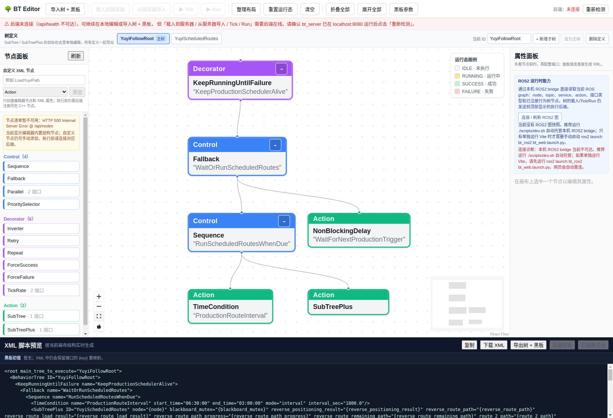
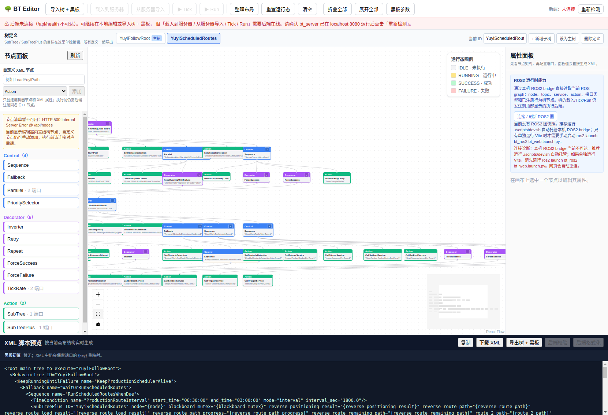
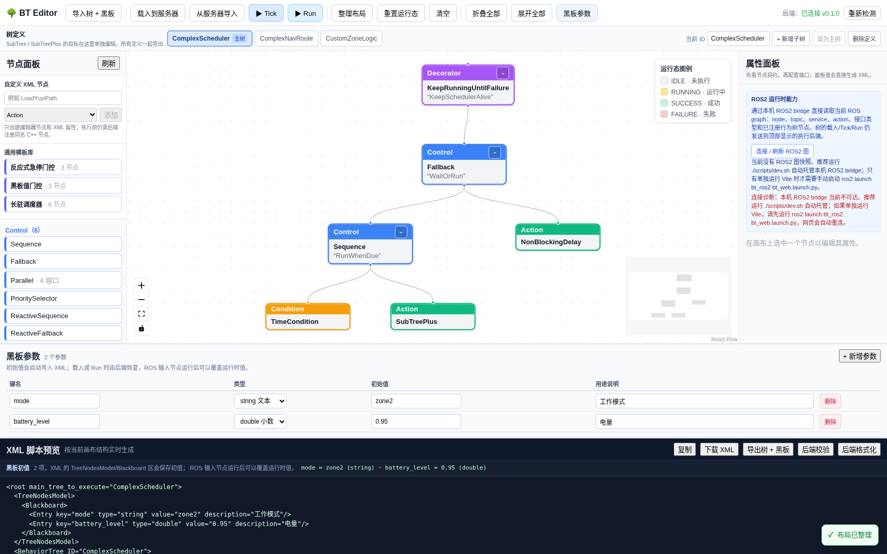

Yuyi 复杂树：ROS2 订阅整合与编辑器优化¶
本页把「深度分析」落到可执行的文档上：先拆解一棵真实的 Yuyi 生产调度树，再给出 把 ROS2 订阅接入行为树的三种写法，最后说明如何用可视化编辑器优化这样的复杂树。 所有截图均由 Playwright 在真实编辑器上抓取。
读者对象¶
已经跑通 快速开始，会加载一棵多子树树。
想给行为树接入电量、雷达、分区、健康心跳等 ROS2 数据，但不确定该放哪个节点。
手上有一棵像 Yuyi 一样「主树 + 大子树 + 并行区」的复杂树，想在编辑器里边看边改。
背景：YuyiFollowRoot 是什么¶
这是一个 KeepRunningUntilFailure 包住整个生产调度的树：外层用 TimeCondition
按固定间隔 interval_sec=1800 触发，内层 SubTreePlus ID="YuyiScheduledRoutes"
承载真正的路线执行。它把两个逻辑清晰地解耦：
主树 YuyiFollowRoot：只负责「到点就跑、跑完等着」的调度决策。
子树 YuyiScheduledRoutes：负责具体路线，含工作工具升降、障蔽开关和分区策略。
用 Playwright 抓到的真实渲染结构如下，这是编辑器中完整的主树：
{kind=link}

子树结构 —— 并行区依赖¶
YuyiScheduledRoutes 用 Parallel success_threshold=1 failure_threshold=1 同时跑两件事：
FollowRoutes—— 串行加载并跟随两条路线（ReverseWork、WorkAndBack）。MonitorCurrentWorkArea—— 每 1000ms 采样当前分区，按RunOnZoneTransition在进出zone1/zone2时启停清扫/推铲电机、切换障蔽策略。
两张子树相互独立：一个是「动」，一个是「看」。这就是为什么用 Parallel 而不是
Sequence —— 路线在跑，分区监视不能停。
{kind=link}

ROS2 订阅可以放进哪里¶
框架已经在 bt_ros2 里提供了一批「把 ROS2 数据桥接成行为树状态」的节点。下面
按用途归类，标清楚哪些**直接用现成节点**、哪些需要**自己继承基类写一个**。
直接可用的现成节点¶
RosTopicCondition（Condition）—— 订阅 std_msgs/Bool，最近一次 true 即 SUCCESS
RosTopicAction（Action）—— 向 std_msgs/String 话题发布一条消息
RosGraphCondition（Condition）—— 检查 node/topic/service/action 是否存在于 graph
CallTriggerService（Action）—— 异步调用 std_srvs/Trigger（升降/复位/启动）
CallSetBoolService（Action）—— 异步调用 std_srvs/SetBool（启停电机/开关）
IsObstacleClose（Condition）—— 订阅 sensor_msgs/Range，按阈值判障蔽
ReadBattery（InputNode）—— 订阅 BatteryState，把 level 写入黑板
ReadScalar（InputNode）—— 订阅 Float64，把 value 写入黑板
IsDocked（Condition）—— 订阅充电桩对接 Bool
需要写一个子类的场景¶
当你要订阅的不是上述现成类型——比如订阅 sensor_msgs/LaserScan 判断最近障碍物
距离、订阅自定义分区消息、或把某个 topic 里的值同时写成多个黑板键——就继承
bt_ros2 提供的可复用基类。基类已经帮你处理了「从黑板拿 ROS 句柄、首次 tick 惰性
建订阅、回调缓存最新消息、数据新鲜度判断」这些样板，你只需要实现一个方法。
// 用法 A：把 ROS2 数据当条件用
#include "bt_ros2/ros_subscriber_node.hpp"
#include "sensor_msgs/msg/range.hpp"
class IsObstacleClose : public bt_ros2::RosConditionNode<sensor_msgs::msg::Range> {
public:
using RosConditionNode::RosConditionNode;
static PortsList providedPorts() {
auto p = subscriberPorts(); // 复用 topic/timeout_ms/qos
p.insert(InputPort<double>("threshold", "0.5"));// 追加自有端口
return p;
}
bool evaluate(const sensor_msgs::msg::Range& m) override {
return m.range < getInput<double>("threshold").value_or(0.5);
}
};
// 用法 B：把 ROS2 数据录入黑板
#include "bt_ros2/ros_subscriber_node.hpp"
#include "sensor_msgs/msg/battery_state.hpp"
class ReadBattery : public bt_ros2::RosInputNode<sensor_msgs::msg::BatteryState> {
public:
using RosInputNode::RosInputNode;
static PortsList providedPorts() {
auto p = subscriberPorts();
p.insert(OutputPort<double>("level", "电量百分比"));
return p;
}
void onData(const sensor_msgs::msg::BatteryState& m) override {
setOutput<double>("level", m.percentage);
}
};
已注册的公共端口（所有订阅型子类自动拥有）：topic、timeout_ms、
qos_depth、qos_profile。timeout_ms <= 0 表示只要收到过就算有效；正数表示
数据超过该窗口未更新则判为「不新鲜」。
三种整合写法¶
按「要不要打断当前动作、要不要等数据」分为三种，选哪种取决于业务语义。
写法 A：用条件节点给分支设闸¶
适用：允许先检查后继续。条件节点只返回 SUCCESS/FAILURE，绝不 RUNNING，所以在
Sequence 里放一个 RosTopicCondition，就是「先确认再干活」。
<Sequence name="SafeToStartRoute">
<RosTopicCondition name="PlannerReady" topic="/controller_server/ready" default="false"/>
<LoadYuyiPath name="LoadReverseWork" path_file="config/trajectories/reverseWork.yaml"
path="{reverse_route_path}" result="{reverse_route_load_result}"/>
</Sequence>
写法 B：用 Parallel 并行订阅、写黑板¶
适用：动作在跑的同时**持续刷新**数据，比如边导航边记录电量/速度。每个订阅节点独立
tick，互不阻塞，写入黑板后别的节点用 {key} 读。
<Parallel name="RunWithLiveData" success_threshold="1" failure_threshold="1">
<FollowPath name="FollowWorkAndBackTEB" path="{route_2_path}" .../>
<KeepRunningUntilFailure name="DataFusion">
<Sequence name="ReadSensors">
<ReadBattery topic="/battery_status" level="{battery_level}" timeout_ms="3000"/>
<ReadScalar topic="/speed/status" value="{current_speed}" timeout_ms="1000"/>
</Sequence>
</KeepRunningUntilFailure>
</Parallel>
写法 C：用 ReactiveSequence 让数据变化立即打断¶
适用：一旦某个条件变假，马上 中止当前正在跑的动作（而不是等它自然结束）。标准
Sequence 是「跑到失败才短路」，ReactiveSequence 是「每拍重新评估条件，
当前子节点回到 RUNNING 时重新分派」。要「电量低立即停」或「雷达触发立即停」就用它。
<ReactiveSequence name="RunWithEmergencyStop">
<RosTopicCondition name="EmergencyStop" topic="/yuyi_controller/e_stop" default="false"/>
<FollowPath name="FollowWorkAndBackTEB" path="{route_2_path}" .../>
</ReactiveSequence>
如何优化一棵像 Yuyi 这样的复杂树¶
优化不是重写，而是「把重复收起来、把单调的轮询交给专门的节点、把边界条件提到最前」。
Step 1: Extract Repeated Pattern into SubTreePlus¶
Yuyi 里 FollowPath 和 ObstacleSpeedLimiter 的组合出现了两次
（ReverseWork 和 WorkAndBack），只是参数不同。抽成子树，主树只调用一次：
<BehaviorTree ID="FollowWithObstacleProtection">
<FollowPath path="{path}" controller_id="{controller_id}"
timeout_sec="{timeout_sec}" .../>
<ObstacleSpeedLimiter scan_topic="/scan" .../>
</BehaviorTree>
<SubTreePlus ID="FollowWithObstacleProtection"
path="{reverse_route_path}" controller_id="YuyiReverseTEB"
timeout_sec="1000.0"/>
Step 2: Use TickRate Instead of Hand-Written Polling¶
MonitorCurrentWorkArea 用 NonBlockingDelay msec="1000" 做采样，功能对，但
采样率藏在叶子节点里。改用 TickRate 装饰器把「多少毫秒 tick 一次」放到节点本身，
语义更清楚：
<TickRate background_ms="1000">
<KeepRunningUntilFailure name="MonitorCurrentWorkArea">
<Sequence name="SenseCurrentWorkArea">
<DetectCurrentMapZone .../>
</Sequence>
</KeepRunningUntilFailure>
</TickRate>
Step 3: Health Check at Entry¶
用 RosGraphCondition 在启动前一次性确认关键 ROS 资源在位，避免跑到一半才发现
server 不在。放在主树最外层，失败就整体不启动：
<Sequence name="PreFlight">
<RosGraphCondition entity_type="service" entity_name="/follow_path"/>
<RosGraphCondition entity_type="service" entity_name="/sweeper/up/enable"/>
<RosGraphCondition entity_type="service" entity_name="/sweeper/down/enable"/>
<SubTreePlus ID="YuyiFollowRoot" .../>
</Sequence>
Step 4: Use Parallel Thresholds¶
Yuyi 里每一层
Parallel都写success_threshold="1" failure_threshold="1"。 如果将来想让「工具全部停完才算成功」，直接改成success_threshold="2"。这个 阈值就是「至少几个分支成功才继续」的声明式配置，改起来比改 C++ 逻辑省事得多。
编辑器能不能完成这样的优化¶
能。上面所有改动都只涉及 XML 结构，不用碰 C++。编辑器原生支持：
多定义：顶部「树定义」标签页分别编辑主树和子树，SubTree / SubTreePlus 的目标在各自标签页搭好即可。
属性面板：选中节点后按 manifest 展示端口、方向、类型、当前 XML 属性；面板值 直接生成 XML，改完即见。
整理布局 / 折叠 / 展开：复杂树用「整理布局」自动排布，再用「折叠全部」收拢到 主干，避免一屏装不下。
黑板参数面板：TreeNodesModel/Blackboard 的启动初值直接填，端口用
{key}绑定到黑板，避免把启动值写死在节点里。
上面两张 Yuyi 渲染图就是编辑器对这样一棵多子树、多并行区树的实际渲染结果——节点、 端口、连线都完整保留，说明这类复杂树完全可以在这个界面里排布、检查和改属性。
复杂层级设计示例¶
examples/trees/complex_nested_nav.xml 展示如何用通用节点拼出”多层嵌套 + 条件抢占 + 并行监视”的复杂设计逻辑，全程不写自定义插件（除分区业务）：
{kind=link}

结构层级：
KeepRunningUntilFailure ── 主调度：保持存活
Fallback
Sequence ── 到点触发路线
TimeCondition (interval)
SubTreePlus → ComplexNavRoute
NonBlockingDelay ── 非触发期兜底
ComplexNavRoute: ── 路线：四层门控依次收窄
ReactiveSequence ── 第 1 层：每拍重评估（抢占语义）
RosTopicCondition /safety/e_stop ── 急停，最高优先级
WaitUntilTopic /robot/ready ── 第 2 层：等外部就绪
BlackboardGate mode==zone2 ── 第 3 层：工作模式门控
Sequence ── 第 4 层：真实导航
LoadPathFromFile ── 读 YAML → 发 /reference_path
Parallel ── 并行：跟随 与 限速
FollowPathTopic ── 纯话题跟随，发 cmd_vel
ObstacleSpeedLimiter ── 激光限速，兜底安全
设计要点：
抢占用 ``ReactiveSequence``。急停条件放在最前，每拍都重新评估——急停一触发立即 打断下方四层，而不是等当前导航自然结束。
嵌套不是堆自定义节点。四层全用通用节点，只把 RunOnZoneTransition`（分区业务） 留在 `CustomZoneLogic，通过 BT_PLUGIN_DIR 加载。
并行分工明确。FollowPathTopic 负责”走”，ObstacleSpeedLimiter 负责”安全”， 二者互不阻塞，任一失败按 failure_threshold=1 触发整体失败。
验证这类复杂树能否载入：导入后应显示 3 棵树、2 个黑板初值、无根节点错误，仅 1 个未注册节点（RunOnZoneTransition）。
验证清单¶
改完后请按顺序验证，任何一步失败都优先看失败项，不要跳过：
检查项 |
方式 |
期望 |
|---|---|---|
XML 能加载 |
用「导入树 + 黑板」载入 |
主树与子树都出现在标签页，无「必须有且仅有一个根节点」报错 |
新增节点可编辑 |
选中新加节点看属性面板 |
端口和类型正确显示 |
结构正确 |
点「整理布局」再「fit view」 |
连线完整，无孤立节点 |
导出为原始 XML |
用「下载 XML」导出 |
重新载入导出结果结构一致 |
真实执行 |
启动 |
节点按 tick 变色，无绑定报错 |
（仅前端离线编辑时，「载入到服务器 / Tick / Run」会因后端离线而禁用，属预期行为； 本页的截图验证仅针对结构完整性与可编辑性，不涉及真实执行。）